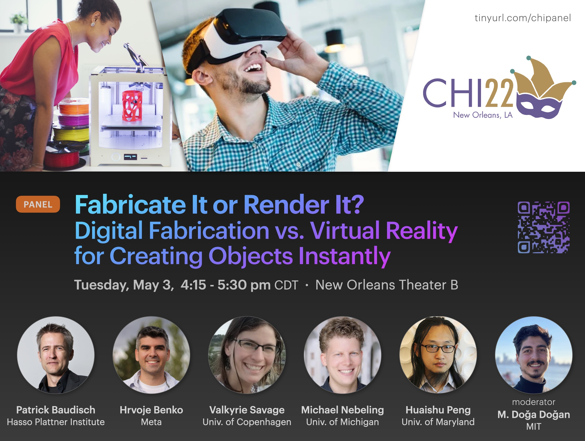

Since 2017 © MIT CSAIL (HCI Engineering group) [redesign by
moji
].
All Rights Reserved.



In the technical human-computer interaction (HCI) community, two research fields that gained significant popularity in the last decade are digital fabrication and augmented/virtual reality (AR/VR). Although the two fields deal with different technical challenges, both aim for a single end goal: creating "objects" instantly – either by fabricating them physically or rendering them virtually. In this panel, we will examine the pros and cons of both approaches, discuss which one may prevail in the future, and what opportunities exist for closer collaboration between researchers from the two research fields.
Digital fabrication and AR/VR researchers represent a large fraction of the technical HCI community and have produced numerous papers at premier HCI venues, such as CHI, UIST, TEI, and DIS.
Digital fabrication and personal fabrication research aims to empower non-experts to design and produce their own physical artifacts, objects, and products using digital tools in their own homes. While the technical approach of creating arbitrary objects on demand – using 3D printing – was protected by several patents, the technology rapidly transitioned from industry to the world after the first major patent expired in 2009. Since then, it has been commonly used by technology-enthusiastic makers and further developed by researchers, including those in the HCI and graphics communities. Recent research enabled the fabrication of a greater variety of objects using different types of materials (e.g., conductive printing or full color printing), and proposed ways to lower the entry barrier to various digital fabrication methods beyond 3D printing (e.g., laser cutting, CNC milling, cutting plotter) for non-experts.
Augmented, virtual, and mixed reality (AR/VR/MR) are intended to create an interactive experience that simulates or enhances the real world. While VR immerses users into a completely virtual environment, AR overlays the user’s view of the real world with digitally generated content. The vision of creating a computer-generated, realistic world goes back to the 1960s, when Ivan Sutherland proposed his concept of the Ultimate Display, and the first AR head-mounted display prototype known as The Sword of Damocles. While in the last decade the advancements in computer graphics, haptics, and other technical areas enabled the rapid development of more portable AR/VR tools, the unexpected demands of the COVID-19 pandemic also contributed to the rise in their popularity.
The two fields use fundamentally different hardware (e.g., 3D printers vs. headsets) and software tools (e.g., slicers vs. game engines) to build artifacts. However, their goals are similar: to create objects instantly – either by fabricating them physically or rendering them virtually. The objects should be able to be generated on demand and with the functionality and look desired by the user. These aspirations are true of many applications of both research fields. For example, in architectural design, a digital 3D model could be rendered in an AR/VR environment or a low-fidelity model could be 3D printed to experience a building before it is built. In medicine, surgeons can practice an operation using VR headsets or by 3D printing phantoms before performing it on the actual patient. The same can be said of many different applications in product design or market research, where experiencing and testing a virtual or low-fidelity product that does not yet exist is crucial.
In this panel, we will talk about how both fields have evolved in the last decade and how they were able to generate significant interest in the HCI community. We will discuss and compare the pros and cons of each research field, identify similarities and differences, as well as challenges and opportunities. We will also draw conclusions about which one is more important for different applications. For example, while a 3D model can be virtually rendered faster using a VR headset rather than a 3D printer fabricating a physical sample, current VR headsets do not provide the same realistic haptic feedback as a 3D printed sample would be able to afford.
We will also discuss which field may prevail in the future, and whether there is room for closer collaboration between researchers from the two research fields. Several HCI papers have already demonstrated how the two fields could work together to achieve more sophisticated goals and to better assist users. For example, in RoMA, users can design CAD models in augmented reality while a 3D printing robotic arm physically constructs the model’s features. By using AR as a tool, RoMA allows the designer to integrate real-world constraints into the object’s design intuitively and rapidly. MixFab is a mixed-reality environment that allows users without 3D modeling skills to create content for personal fabrication. The users can build new models using gestures or by 3D scanning existing physical objects. In Situated Modeling, users can draw 3D models by moving tangible 3D primitive shapes with fiducial markers attached on them. In this AR framework, new virtual objects can be designed in air and displayed alongside existing physical ones.
While these projects demonstrated how AR can be used as a tool to advance digital fabrication, AR research may also benefit from leveraging fabrication tools for various use cases, such as object identification and tracking. For instance, InfraredTags allows users to invisibly embed fiducial markers (e.g., ArUco) into 3D printed objects so that objects can be unobtrusively identified and tracked in augmented reality applications. LayerCode uses stereolithography to embed barcodes’ bits into the individual layers of 3D printed objects, which can be used to estimate the 3D position of objects or to insert overlays in AR applications. Furthermore, many hardware tools for AR/VR are prototyped using 3D printers, as demonstrated by Haptic Links or CLAW.
The panel includes five panelists and one moderator. It will be hybrid (i.e., held in-person with ability for panelists and attendees to participate virtually).
The panel will begin with the moderator introducing the panelists and the topic of discussion. The panelists will each be given two minutes to briefly summarize their current research and their view on the future of the two fields, optionally supported by 1-2 slides.
Next, the moderator will kick off the discussion by briefly explaining what led to recent interest in the fabrication and AR/VR research (e.g., the democratization of 3D printers or virtual reality headsets). Then, we will talk about the current state of the two fields, as well as their promise and potential. Following this, the panel will speculate about the future of both fields. This discussion is expected to cover the major portion of the allotted time. Throughout the panel session, careful moderation will ensure that all views are equally represented and that all panelists are given equal opportunity to speak. We expect that the following key questions will be addressed in the discussion:
Each question will be answered by one fabrication researcher and one AR/VR researcher. Each panelist will be asked to speak for no more than 3 minutes each.
After the introductions (15 minutes) and the initial discussion (30 minutes), the floor will be opened for a full-blown discussion with the audience. We would like to encourage a lively and interactive debate, given how timely and controversial the question is. The audience will be able to ask questions or provide comments on panelists’ viewpoints. The discussion will be streamed on Zoom to allow for remote participation. Remote attendees will be able to ask questions through the chat function, which will be directed to the moderator and panelists with the help of a student volunteer.
Logistical needs and hybrid requirements: For the panel, we do not have any special logistical needs other than typical A/V support for a hybrid event. In case the panelist would like to display images, it is preferred to have a projector. Since the hybrid panel will allow remote participation, a camera setup for streaming on Zoom is desired. Alternatively, a student volunteer may stream the event via their mobile device or laptop. This person should be responsible for bringing up these questions to the panel. In addition, we would like to have 1-2 student volunteers to pass the microphone for questions and comments from the co-located audience.
The panel will be facilitated by Mustafa Doga Dogan, a PhD candidate at the Massachusetts Institute of Technology (MIT). Dogan’s doctoral work focuses on embedding tags and markers into everyday objects to identify or track them and to store information in them. He leverages digital fabrication methods such as 3D printing to achieve this. The panel is organized by Dogan and his PhD advisor Stefanie Mueller.
The panelists listed below were selected to balance the expertise in fabrication and AR/VR research.
Patrick Baudisch is a Professor in Computer Science at Hasso Plattner Institute at Potsdam University and chair of the Human Computer Interaction Lab. After working on mobile devices, touch input, and natural user interfaces for several years, his current research focuses on personal fabrication, haptics, and virtual reality. Previously, he worked as a research scientist at Microsoft Research and Xerox PARC. He holds a PhD in Computer Science from Darmstadt University of Technology, Germany. He was inducted into the CHI Academy in 2013 and has been an ACM distinguished scientist since 2014.
Hrvoje Benko is a Director of Research Science at Facebook Reality Labs Research, working on novel interac-
tions, devices and interfaces for Augmented and Virtual Reality applications. He currently leads a multi-disciplinary organization that includes scientists and engineers with expertise in HCI, computer vision, machine learning, AI, neuroscience, robotics and cognitive psychology. His previous work at Microsoft Research was released as products, including Microsoft Touch Mouse and Microsoft Surface. He received his PhD in computer science from Columbia University in 2007.
Michael Nebeling is an Assistant Professor in the School of Information, where he leads the Information Interaction Lab. His lab investigates new methods, tools and technologies that enable users to interact with information in more natural and powerful ways, and also make it easier for designers to create more usable and effective user interfaces. Previously, he was a postdoctoral researcher and lecturer at the HCI Institute at Carnegie Mellon University and the Department of Computer Science at ETH Zurich, where he also obtained his PhD.
Huaishu Peng is an Assistant Professor in the Department of Computer Science of University of Maryland, College Park, where he works at the intersection of HCI and personal fabrication. He designs hardware and software systems to enable 3D modeling with interactive experiences and to manufacture functional objects with custom fabrication machines. He received his PhD in information science from Cornell University in 2018.
Valkyrie Savage is an Assistant Professor in the Department of Computer Science at the University of Copenhagen. Her work in HCI focuses on input devices and techniques mediated through sensing and digital fabrication. Specifically, she is interested in creating deeply custom interfaces that are adapted to users’ bodies, contexts, and needs. She received her PhD in computer science from UC Berkeley in 2016 and also worked as a researcher at Tactual Labs.
.